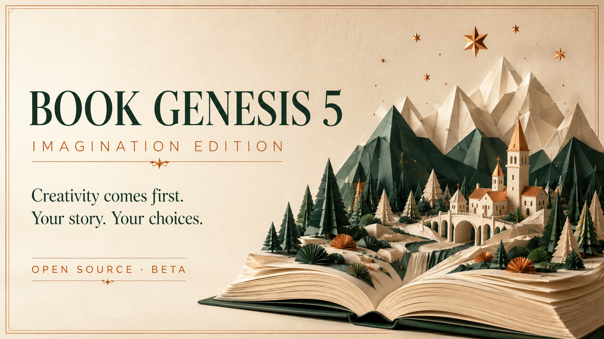

Book Genesis 5 — Imagination Edition
Creativity comes first.
Your story. Your choices. Book Genesis is a local-first writing workflow for shaping an idea into a manuscript you can inspect, revise, and carry forward.

The author stays present
Keep the spark. Give the process somewhere to go.
Book Genesis helps turn a premise into a visible trail of decisions: foundation, outline, draft attempts, model feedback, editorial audit, and local exports. You can redirect the work at key moments, pause safely, and return to the same project later.
A deliberate flow
One idea, six clear movements.
The runner saves the work locally. Model providers you choose supply text and feedback; the project remains yours to examine and revise.
- 01Foundation
Clarify the premise, stakes, audience, and story engine.
- 02Outline
See the shape of the work before drafting the pages.
- 03Draft
Build chapters with retained attempts instead of a disposable one-shot.
- 04Model read
Use blind model-reader feedback to identify where attention holds or breaks.
- 05Audit
Read the manuscript as a whole; revision requests stop the process for you to address.
- 06Export
Review locally, compare versions, and export canonical chapters to Markdown or EPUB.
Get started
Start with the sentence you cannot stop thinking about.
Bring your own model route: an existing CLI session, a configured provider, a local server, another command-line adapter, or manual copy and paste. The runner guides the rest and keeps the project files on your machine.
Read the full quickstart guidegit clone https://github.com/felipelobomotta-blip/book-genesis-v4.git
cd book-genesis-v4
python -m pip install -e .
book-genesis setup
book-genesis new --idea "Your premise" --language enControlled beta. Book Genesis can structure a writing process and surface model feedback; it does not guarantee a bestseller, publication readiness, or a human reader response. The next proof comes from writers, editors, and readers using it on real work.